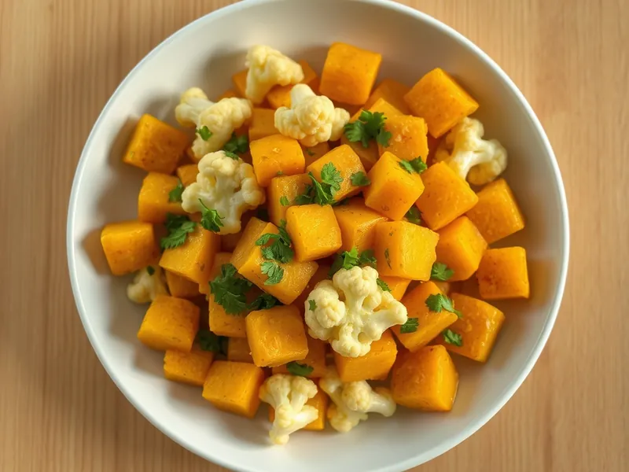

Алу гоби - картошка с цветной капустой по-индийски
Картофель и цветная капуста, тушённые с помидорами, имбирём, зирой и куркумой
30 мин3 порц.305 ккал на порциюБ 8 · Ж 15 · У 36Интернациональная кухня
Открыть в приложении: порции, таймеры, список покупок
Продукты на 3 порц.
- Картофель3 шт
- Цветная капуста400 г
- Лук репчатый1 шт
- Помидоры2 шт
- Чеснок2 зуб.
- Имбирь10 г
- Куркума1 ч. л.
- Зира1 ч. л.
- Растительное масло3 ст. л.
- Вода100 мл
- Соль1 ч. л.
- Острый перец молотый по желанию1 щеп.
- Кинза по желаниюпо вкусу
Как готовить
- Картофель нарежьте кубиками 2 см, капусту разберите на небольшие соцветия. Лук, помидоры, чеснок и имбирь мелко порубите.
- Разогрейте масло в глубокой сковороде на среднем огне и обжарьте зиру 30 секунд, пока она не зашипит и не запахнет. Добавьте лук и жарьте 4 минуты до золотистого цвета.
- Добавьте чеснок, имбирь, куркуму и острый перец и прогрейте 1 минуту, затем положите помидоры и готовьте 3 минуты, пока они не размякнут.
- Выложите картофель и капусту, посолите и перемешайте, чтобы овощи покрылись жёлтым соусом. Влейте воду.
- Тушите под крышкой на слабом огне 15 минут, перемешав пару раз, пока картофель не станет мягким, а капуста не будет легко прокалываться ножом. Посыпьте кинзой.
Совет. Если специй нет по отдельности, замените зиру и куркуму 2 ч. л. готовой приправы карри.